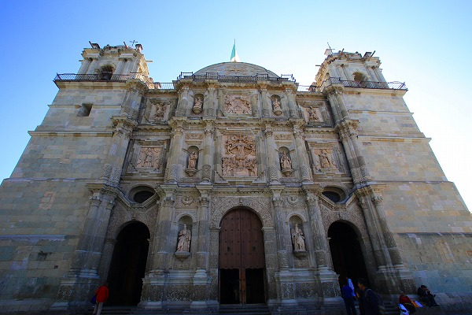

オアハカ大聖堂/オアハカ Catedral Metoropolitana de Oaxaca/Oaxaca
さて。
メキシコでの珍寺修行は南部の町、
オアハカOaxacaから始まる。
首都のメキシコシティをすっ飛ばして（乗り換えで空港だけは寄ったけど）先にオアハカに来たのはこの街がある意味
一番メキシコらしい町だと聞いたからである。
そんな街でウオーミングアップがてら幾つかの教会へ行ってみることにした。
オアハカと言えば派手な色の家が建ち、先住民が多く住むので多彩な民族衣装も見られ、歴史あるチュリゲラ様式の教会も多い。
つまりコッテコテのメキシコがそこにあるのだ（多分）。
街に一歩繰り出せば、ホラ。こんな。
うひょーーー！
日光が眩しい！色濃い！影暗い！ビバ、メヒコ～！

日本にいるときは目に灰色のフィルターでも付けてたんじゃないの？俺…と思えるほどビカビカの色がズドーンと目に突き刺さって来る。
もう、歩いてるだけで脳内麻薬が出っぱなし。ホントこういうトコが好きだなあ。
そんな街並みをぶらぶら歩いていると…

大きな教会があった。
オアハカ大聖堂である。この街の中心となる教会である。
メキシコの街はスペインの都市計画の影響を受けて、街の中心に
ソカロと呼ばれる広場があり、その正面に大聖堂が配置されている。
ほとんどの街がそうなっているので、旅行者は知らない街に着いたらまずソカロを目指すのが良いでしょう。
実際、この数日後の大晦日にはカウントダウンパーティーが催され、大勢の市民がこの教会の前で新年を祝っていた。
（バクチクを鳴らしまくりのそれはそれは凄い（酷い）乱痴気騒ぎでありました…）
で、大聖堂である。
建物の正面はこってりとしたバロック調な装飾で埋め尽くされていた。
覚悟して入ると内部は意外とシンプル。
皆さん祈りを捧げてました。
クリスマス直後だったのでキリスト誕生のジオラマがあった。
コレ、年末年始に旅をしているとあちこちの教会で見かけるのだが、何か名前があるのかな、と調べてみたらクレーシュとかプレゼべって言うんだそうです。
教会の片隅にガラスケースに入った聖人像が。
よく足元を見ると小さな写真が捧げられていた。
これって…もしかして亡くなった人の供養とかですか…？
さて、オアハカの中心の教会でキリストさんに仁義を切ったのでさらに奥へと歩を進めよう。
次に訪れた（というか迷い込んだ）のは巨大な市場。
巨大すぎて全容が掴めないどころか、中から生還するのがやっとの市場だった。
家庭用クレーシュ（メキシコでは何と言うんだろう？）に使う飾りが売られていた。
わ。羊の丸焼きですか。
天使とかサボテンのクリスマスツリーとかばらまき用の土産に持って来いじゃわい！…と思ったが思いの外、高かった。
やはり季節物だからなのだろうか。
こっちは玩具屋。
どの店も色味が変わらないような気がする…
邪悪なお人形の上にある角の生えたヒトデみたいな飾り物は
ピニャータといい、祝い事などに用いられるくす玉のようなものだ。
子供の誕生日などに子供たちが棒でバッコンバッコンに叩いて割ると中からお菓子などが出てくるというもの。
新年かクリスマスのお祝いなのだろう、街中にもディスプレイとしてたくさん飾られていた。
市場の店と店の隙間には小さな飯屋がある。
メキシコといえばもちろんトルティーヤ。
もちろんビールとの相性は最高！
この国に来て最初に覚えた言葉はもちろん
cerveza（ビール）！
次の修行へＧＯ！